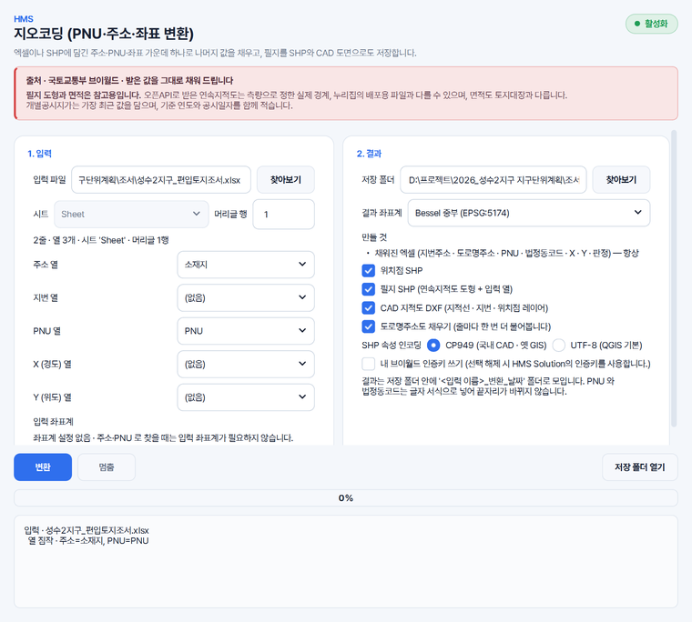

엑셀 주소를 좌표로 일괄 변환할 때
조서나 목록의 주소 열을 고르시면 줄마다 지번주소 · 도로명주소 · PNU · 법정동코드 · X · Y 를 채웁니다. 소재지와 지번이 서로 다른 열에 있어도 이어 붙여 찾습니다.
HMS 지오코딩은 주소만 적힌 조서, PNU 만 있는 목록, 좌표만 찍힌 점 자료처럼 한 가지만 갖춘 표를 넣으시면 나머지 값과 그 필지의 도형까지 찾아 드립니다.
어느 열이 주소 · PNU · X · Y 인지 짐작해 보여 드리며, 틀렸으면 바꾸실 수 있습니다.
넣으신 원래 열은 그대로 두고, 그 뒤에 결과 열과 판정 · 비고를 붙입니다.
조서나 목록의 주소 열을 고르시면 줄마다 지번주소 · 도로명주소 · PNU · 법정동코드 · X · Y 를 채웁니다. 소재지와 지번이 서로 다른 열에 있어도 이어 붙여 찾습니다.
PNU 만 있는 표에서 지번주소와 좌표를 찾습니다. 엑셀이 숫자로 바꿔 끝자리가 사라진 PNU 로 찾은 줄은 '확인 필요' 로 따로 표시합니다.
X · Y 열만 있는 표를 넣으시면 줄마다 지번주소 · 도로명주소 · PNU 를 찾아 채웁니다(역지오코딩). 위경도(WGS84) 좌표로도 찾으실 수 있습니다.
필지의 연속지적도 도형을 필지 SHP 로, 지적선 · 지번 · 위치점 레이어를 담은 CAD 지적도 DXF 로 저장합니다. 연속지적도는 도해 자료라 경계와 면적은 참고용입니다.
점 SHP 는 점마다, 폴리곤 SHP 는 도형 안쪽 한 점의 필지나 걸치는 필지 전부를 찾습니다. 좌표계는 .prj 에서 읽고, 없으면 직접 고르십니다.
엑셀(.xlsx · .csv)이나 도형(.shp · .zip)을 고르시거나 창 안으로 끌어다 놓습니다.
짐작해 잡은 열이 맞는지 확인합니다. 좌표로 넣으실 때는 입력 좌표계를 고르시고, 결과 좌표계는 따로 고르십니다.
엑셀은 늘 만들고, 위치점 SHP · 필지 SHP · CAD 지적도 DXF 는 골라서 만듭니다. 도로명주소가 필요 없으면 꺼 두시면 더 빨리 끝납니다.
저장 폴더 안 '입력 이름_변환_날짜' 폴더에 모이며, 엑셀의 [요약] 시트에서 판정별 건수를 보실 수 있습니다.
HMS Geocoder does batch geocoding of Korean addresses in Excel and can save the matched parcels as SHP and DXF files. Give it a lot-number or road-name address, a PNU parcel number or a pair of X/Y coordinates on each row, and it looks up the rest through VWorld's geocoder and cadastral data, so coordinates alone are enough to find an address. It runs on Windows, and its screens are in Korean.
가상의 사업지(성수2지구 지구단위계획) 자료를 넣어 찍은 화면입니다.

네. 주소 · PNU · 좌표 가운데 하나만 있으면 됩니다. 주소 열을 고르고 [변환]을 누르시면 나머지 값을 줄마다 채워 드립니다.
네. 주소마다 19자리 PNU 와 법정동코드를 찾아 결과 열에 적습니다. 두 값은 글자 서식으로 넣으므로 엑셀에서 끝자리가 바뀌지 않습니다.
지번주소와 PNU 는 필지 하나를 가리키므로 정확, 도로명주소는 건물 위치를 기준으로 하므로 근사로 적습니다. 찾지 못한 줄은 실패로 적고 비고 열에 까닭을 남깁니다.
브이월드 지오코더는 산 번지의 '산'을 무시하므로, 넣으신 지번으로 다시 확인해 맞춥니다. 넣으신 지번이 연속지적도에 없으면 지오코더가 잡은 자리의 필지로 대신 잡아 근사로 적고, 비고에 그 사실을 남깁니다.
브이월드에는 하루 호출 한도가 있습니다. 한도에 닿으면 그때까지 찾은 줄은 결과에 그대로 담고 남은 줄은 따로 파일로 모아 드리므로, 다음 날 그 파일만 넣어 돌리시면 됩니다.
화면을 그대로 담아 번호를 붙였습니다. 처음 쓰시는 분이 순서대로 따라오시면 됩니다.
솔루션을 하나씩 받지 않습니다. Solution Center 를 한 번 설치하면 그 안에서 골라 설치합니다.
파이썬 같은 실행환경까지 함께 들어 있어, 쓰시는 컴퓨터에 따로 준비하실 것이 없습니다.
소속은 회사명 · 학교명 · 기관명을 정확히 적어 주셔야 승인됩니다.
내려받기부터 설치까지 한 번에 끝납니다. 새 버전이 나오면 카드가 알려 줍니다.
쓰시다가 막히면 화면을 캡처해 카카오톡 오픈채팅이나 메일로 보내 주세요. 오류 창이 떴다면 그 창까지 함께 담아 주시면 가장 빠릅니다. 문의하는 곳은 홈페이지 문의 칸에 모아 두었습니다.
모두 같은 Solution Center 안에서 골라 설치합니다.